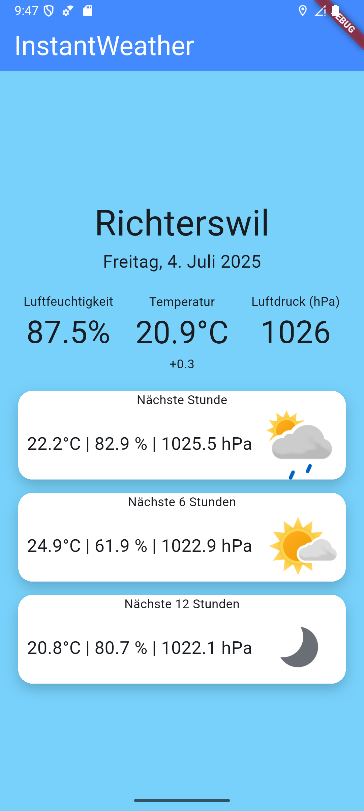

InstantWeather
Jan Atzgerstorfer
WeatherOffers in-app purchases

InstantWeather ermöglicht – wie es der Name bereits andeutet – sofortigen und unverzögerten Zugriff zur aktuellen Wetterprognose des momentanen Aufenthaltsstandorts des Benutzers. Auf einen Blick visualisiert die App kompakt aktuelle Wetterdaten und die Prognosen für die nächsten Stunden. Hierbei werden Veränderungen der aktuellen Wetterlage direkt unter den jeweiligen Messwerten dargestellt. InstantWeather: Die simple Lösung für ein simples Problem.